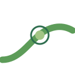

Wave- and tide-driven marks that reflect drifting with your energy levels and working smoothly, all in the app's forest-green palette.
Three smooth tidal strata drifting at their own pace — calm, layered rhythm.

A smooth ocean swell you drift on, with your energy at the crest.
A focus cycle (orbit) with a wave flowing through it — time and tide together.
Two tides flowing toward a calm center — working smoothly through your highs and lows.
Concentric tide rings radiating outward, with a small dot drifting on the current.